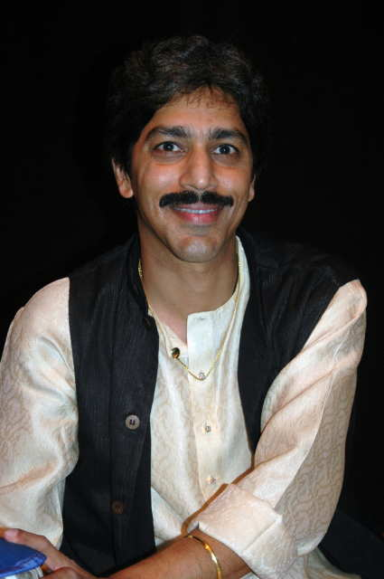

|
A concert so nice!
Every once in a while, you attend a cultural program that seems to etch your mind forever. Such an event happened on October 23, 2004. The venue was a local university (Southern University of New Orleans), the occasion was Sharodio Utshab (Autumnal festival). The local Bangalees of New Orleans gathered for an all day festivity. In the night, the organizer arranged a one-act drama, which was followed by a musical soiree by a duo from Houston, Texas, which is only 7-8 hours drive from New Orleans.
I was told beforehand that the female singer who will render some semi-classical Bangla songs is a classically trained singer from Kolkata and the tabla player is a reputable percussionist from Benares school of classical music. The combination could be deadly, I reckoned. I decided to record the entire 90-minute music recital and I got the permission from the organizer who also assured me that it wouldn’t be a problem as far the musicians go. Thus, I packed the boot of my car with recording gear that includes some quality condenser microphones, a state-of-the-art mixing board, a signal processor, and a digital recorder. Never mind an assembly of microphone stands, audio cables, headphone, etc.
The vocalist was Sangeet Bhushan Rajnita Banerjee who regularly had performed in All India Radio, Kolkata, and Mumbai for last 20 years. She also performed in Doordarshan, Kolkata. Her expertise in vocal music centers on classical and Nazrul Geetis for which she has received many encomiums. She received her first training from Kolkata’s legendary teacher Bimal Mitra at a tender age. Then she was student of Prasun and Meera Bandyopadhay (Patiala Gharana) for 15 years. She also learned Nazrul Geeti from Purabi Datta, an expert Nazrul Geeti singer, and from Sukumar Mitra. Kolkata’s famous teacher Sri Jatileswar Mukherjee furnished her training in modern Bangla song for five long years. Ms. Banerjee had received far too many awards in many musical competitions in the last two decades.
Sangeet Bhushan Srimati Rajnita Banerjee at the concert
The percussionist, Pundit Shantilal Shah, represents the Benares School of tabla playing. He received his training in Mumbai under Pundit Suresh Talwalkar. He has been playing tabla for more than 20 years and had accompanied very famous vocalists such as Pundit Jasraj. The expert tabalchi now lives in Houston where he is very active in the classical Indian music scene; he also teaches table to aspirant tabla player. Pundit Shah is a very sensitive tabla player who has not only mastered the art of tabla playing but his rapport with the vocalist, which I witnessed in the concert in New Orleans firsthand, tells me that he has a delicate sense of proportion who knows where to play a hard tabla and when to play a mellow style.
In the concert, the duo played 14 songs starting at 10:15 p.m., which continued until 11:45 p.m. without any break. The selections covered the entire gamut of semi classical song, which we know them as Rag Pradhan Bangla Gaan, Kajri, Ghazals, devotional songs (Bhajan), etc. The duo also performed several songs from Nazrul Geeti, and modern Bangla songs.

Pundit Shantilal Shah played some incredible tabla !
The first number was an invocation to Vidya (Sangeet) Devi, which was followed by another invocative song called “Jago Nirmoyee, Chinmoyee,” Kajri—a folk song of Uttar Pradesh—“Piya Bena Ayee.” The fourth song was a selection from Begum Akhtar’s Ghazal—Aye Muhabbat—a grand light song of passion that made Begum Akhtar a famous Ghazal singer. Ms. Rajnita Banerjee did a very nice rendition of this famous song and Pundit Shantilal Shah also played a delicate tabla along with it.
The fifth, sixth, and the seventh songs were Rag Pradhan Bangla songs in Raga Kafi. The lyrics were: “Bashoree Nishithe” and “Bajey Monjirey” (a song recorded by Manobendro Mukhopadhya in the sixties) and “Korona Bhromor Gungun.” The 8th and 9th songs were Nazrul Geeti and the lyrics were: “Shoi, Bhalo Korey Binod Benee,” and “Bhuli Kemone Ajo Je Mone, Bedona Shone.” I have listened many a Nazrul songs all through my life but never before have I heard such a nice rendition of those songs. To prove my point I have asked Mr. Avijit Roy, the founding editor of Mukto-mona, a very popular secular e-forum in the Net to create links so that readers may listen to these two Nazrul Geetis and more songs to understand the delicate sensibilities of the two artists. Mr. Roy has done so. The four songs from this concert can now be auditioned through the Internet. These are in mp3 format. With an Internet connection and a PC with a 'media player' or 'RealAudio,' one could listen to these songs. All the reader has to do is click on https://gold.mukto-mona.com/Articles/jaffor/concert/ and then select the song he or she desires to listen. At the end of this article, I am providing four separate links for these songs. One will find that the tabla playing in these songs are simply out of the world. All the bols and thekas are very clear and the emphasis and de-emphasis in 'thekas' and baya tabla are very evident in the recordings. I urge any serious listeners to audition these selections.
The next three songs are all in Bangla and modern too. The 10th songs “Amar Bolar Kichu Chilona” were an adaptation from Hoimonti Shukla’s song. The 11th song “E Kon Shokal Rater Cheo Ondhokar” was a composition from Sri Jatileswar Mukherjee to express a profound sadness over the assassination of Indira Gandhi in 1984. The entire song was sung in an elegiac tone. The 12th song entitled “O Tota Pakhire Shekol Khuley Oriey Debo Maa-ke Jodi Eney Dao,” which was sung by one-time legendary singer of Kolkata, Nirmala Misra. The lyric of the song is a heart wrenching one in which a woman beseeches a caged bird to bring back the dead mother from other world. The program then ended with two more songs, one Bhajan, and a Rag Pradhan Bangla song entitled “Koyelia Gaan Thama Ebar Tor Oi Kuhu Taan Bhalo Aar Lageyna” a song of desolation for lover. The song was filled with pathos.
How would I rate this concert? The readers may have guessed by now that it was a memorable evening that was filled with vocal music, harmonium accompaniment, and fine tabla playing. There was a magic in the air when they hypnotized the audience with theirs allure. The crowd was enthusiastic and mature. They appreciated the tenor of the music.
We now live in an age of cheap entertainment provided by the “idiot box” littered in every house. In the West, people now have multiple TV sets in their home. The networks and TV stations are filling the airwaves with cheap programming. Throughout South Asia, the viewers get an earful of Bombay Dhamakas and noisy music with videos that show undulating body movement that goes by the name “modern dance.” The music that accompanies those dances has less melody but with a preponderance of western dance beat such as “disco” or “hip-hop.”
The musical soiree of October 23, 2004, was a departure from all that that is distasteful and noisy. To listen to a sonorous voice who had mastered the art of Thumri, Ghazals, Kajri, Nazrul Geeti, Bhajan, etc., accompanied by a master tabla player was a delight to my auditory nerve. Needless to say, the evening will last forever in my memory, which will be supplanted by the audio recordings that I have made and which I turned into a CD of 78 minutes. When I crank the volume of my amplifier and play the CD, it sounds as if I am at the auditorium listening to the vocal music of Sangeet Bhushan Rajnita Banerjee and intricate tabla playing of a master percussionist, Pundit Shantilal Shah. Technology, when used appropriately, can do magic but when abused grossly, could cause pain. Then again, one man’s music could be another man’s noise. It is all in the ear of the listener, I suppose.
Here are the links for four songs from the concert for your listening pleasure: 1. https://gold.mukto-mona.com/Articles/jaffor/concert/Amarbolar_Kichu_Chilona_HShukla.mp3 2. https://gold.mukto-mona.com/Articles/jaffor/concert/Bhuli_Kemoney_NGiti.mp3 3. https://gold.mukto-mona.com/Articles/jaffor/concert/Shoi_Bhalo_Korey_NGiti.mp3 4. https://gold.mukto-mona.com/Articles/jaffor/concert/Tota_Pakhire_NMisra.mp3 --------------------------------- Dr. A.H. Jaffor Ullah, a researcher, columnist, and an audio buff, writes from New Orleans |
||||
{kind=link}
{kind=link}